Blond 2006 : ESTIVOL

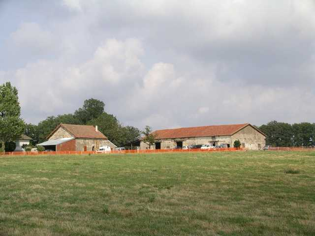
Blond, entre Limoges et Bellac, une belle région, avec les pittoresques Monts de Blond et des fermes splendides comme La Libarderie. Le festival couvre cerfs-volants, ULMs, parachutes et paramoteurs, autogires et tout ce qui s'y rattache.

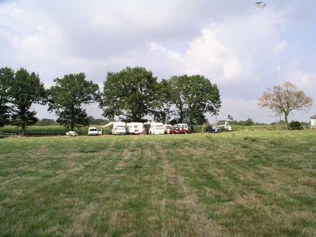
Vendredi après-midi, les campings-cars commencent à arriver et à choisir leurs places à l'ombre des chênes, il fait chaud...

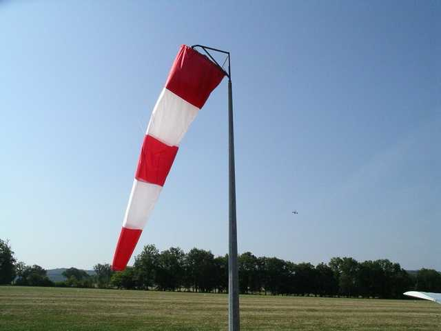
Les terrains sont vastes, parkings, terrains pour cerfs-volants et piste pour les aéronefs de tous types, mais pas trop gros...

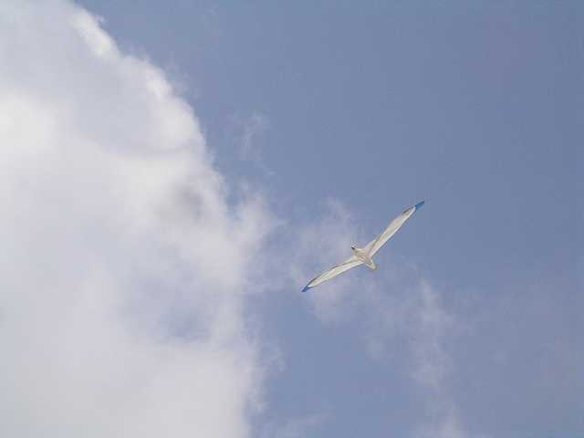
Puisqu'on est là, on fait voler un peu ! Mon Albatros 2 a un peu de mal à rester en l'air, le vent est moyen faible...

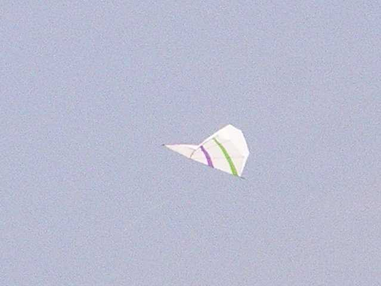
Raymond a sorti son Jessica 14, plus adapté.

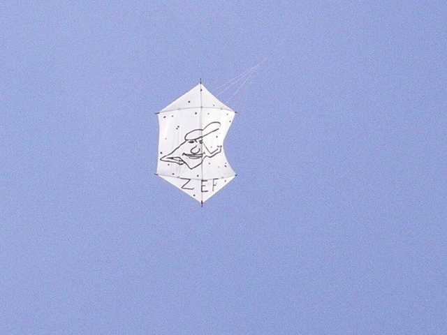
Et un rokkaku à tout hasard, pour attirer le Zef !

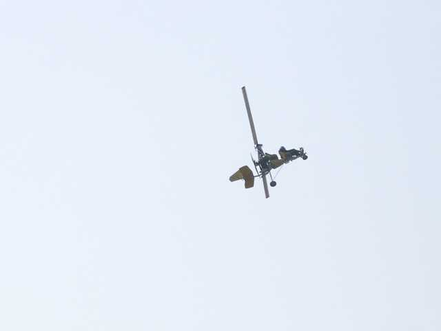
Le samedi, fin prêts. Les autogires commencent à arriver et à montrer leurs possibilités...

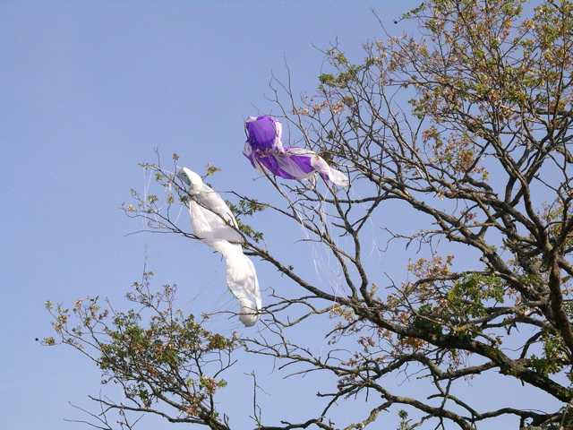
L'équipe des rouleurs de char est arrivée aussi et a décoré le ciel hier soir... Ce matin, faudra bosser !

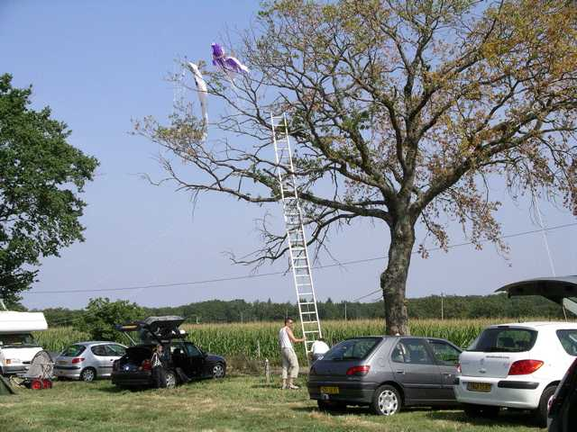
Bon, l'échelle est là, qui est-ce qui monte... euh ! Enfin les voiles seront sauvées mais il y aura d'autres accrochages, en particulier avec les monofils pour se faire de la place, ce qui est très choquant dans notre monde...

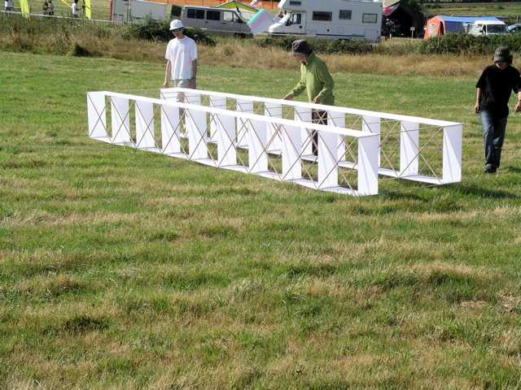
Michel-Marie a réalisé un beau et fin cellulaire. Le montage est un peu long, bien sûr, mais pas très complexe...

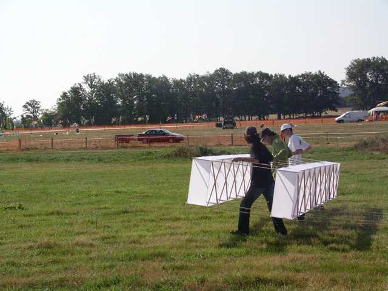
Au début, on le transporte avec précautions... sans se prendre les pieds dans les 30 m de brides (10 fois = 300 m de ficelle !) qui décorent et stabilisent, comme pour les Edo.

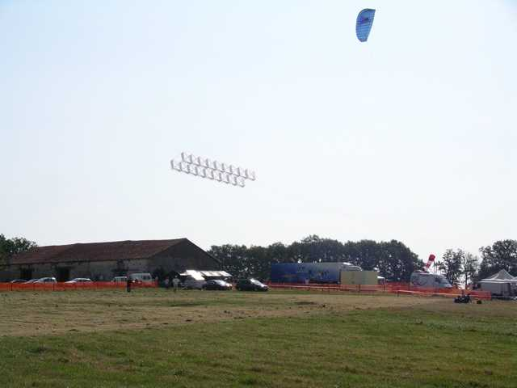
Finalement, il vole bien, même s'il ne ressort pas beaucoup aujourd'hui sur le ciel blanc...

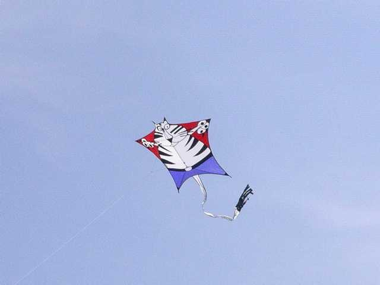
Dans un autre style, ce chat-tigre pentagonal a une belle queue... de vache !

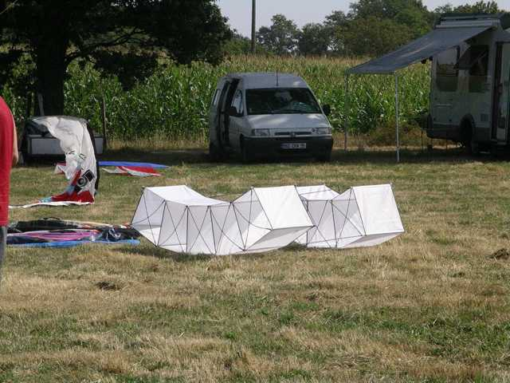
Jean-Pierre a amené ses beaux cellulaires courbes de HQ...

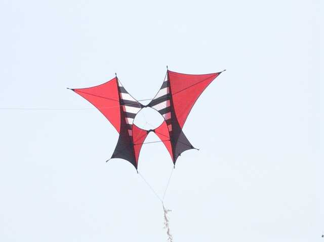
Et Bernard a sorti son CV croisé qui marche très bien avec ce vent !

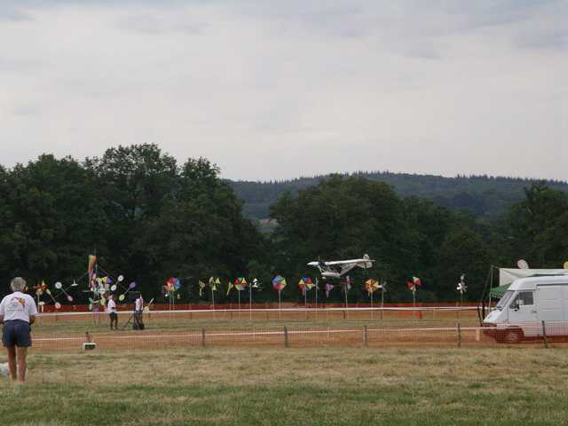
Parallèlement à la piste, Joël a monté ses moulinets musicaux, au milieu d'autres de collègues moins connus des cervolistes d'au-dessus de la Loire !

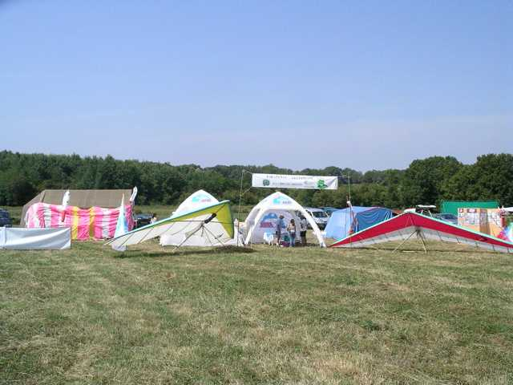
La FFVL a aussi monté son stand, mais ici, elle s'occupe... de Vol Libre et ne se mêle pas des cerfs-volants...

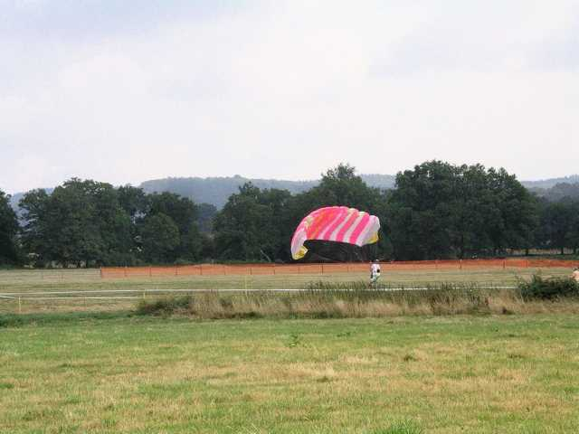
Il y aura toutes les disciplines du parachute, avec démonstrations, cassettes de formation, etc... On gonfle des voiles sur le terrain pour s'échauffer et tenter de séduire...

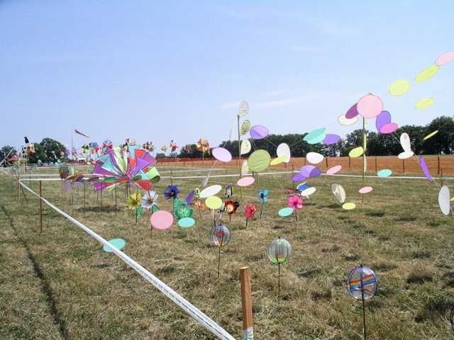
Hormis Joël et François, il y a des jardiniers volumineux, avec ces ensembles de disques qui tournent d'un tas de façons possibles...

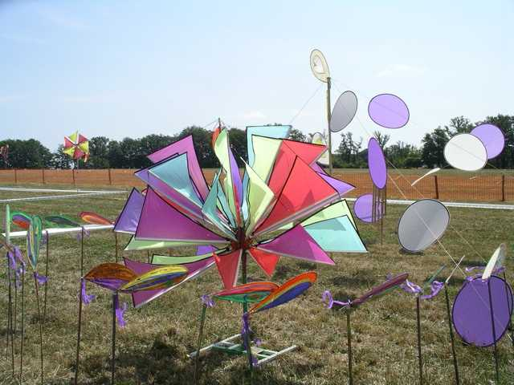
Avec aussi cette belle sphère, moulinet à 3 dimensions, mais qui ne tournait pas quand je suis passé (faute de vent ?) !

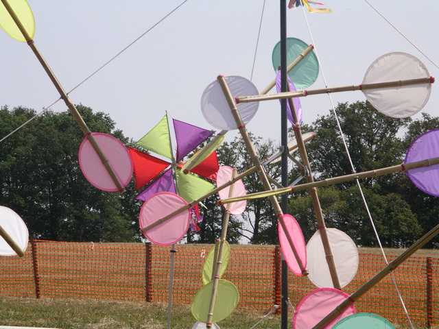
L'auteur avait aussi réalisé ces moulins tournant sur des axes fixes ou simplement enfilés sur des ficelles tendues.

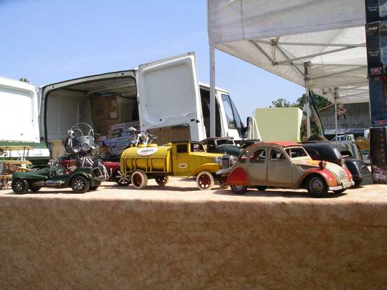
Au sol, un embouteillage ? Non, une vente de vieilles maquettes en métal de voiture d'antan...

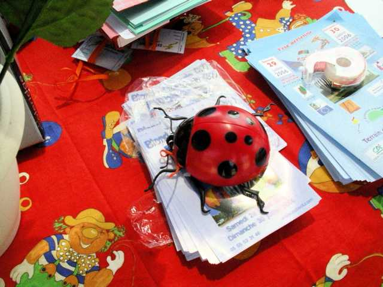
On trouve aussi une nouvelle version de Coccinella Gigantea...

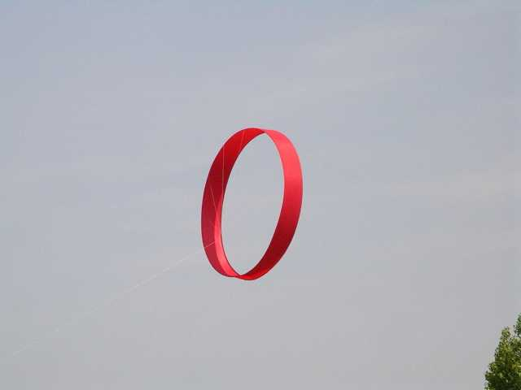
Un beau Circo très pur et qui a super-bien volé...

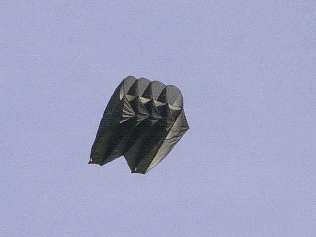
Les Awita sont là, avec un nouveau porteur, toujours flow-form, et aussi baladeur que les violets, mais noir funèbre (peut-être pour ne pas attirer l'attention sur sa présence, ou parce que personne n'en voulait ?)...

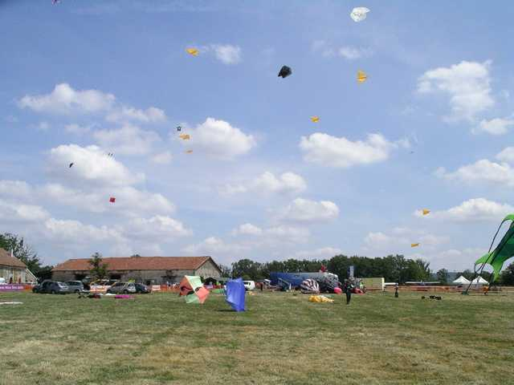
Mais ils ont aussi monté leurs deltas jaunes, dont l'un est d'ailleurs parti vivre sa vie dans un thermique qui l'a monté à perte de vue avec sa ligne et son petit sac ! Ca faisait du monde en l'air, tant mieux, parce que le samedi, avec les charistes qui défendaient le terrain, les monofils étaient plutôt restés dans les sacs...

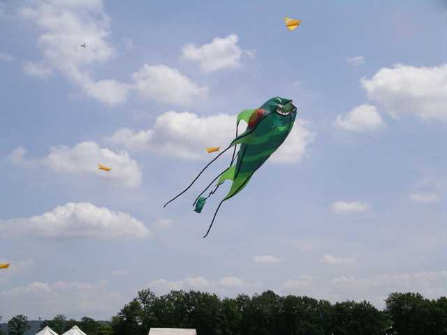
Les Awita avaient tout leur bestiaire : la grande raie, le poisson vert...

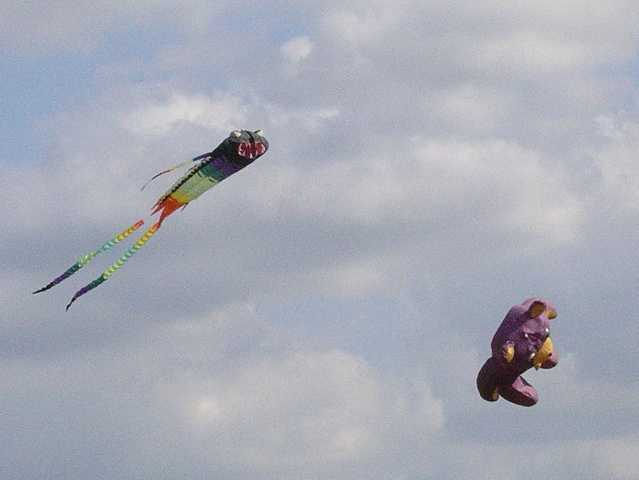
...le Nounours.

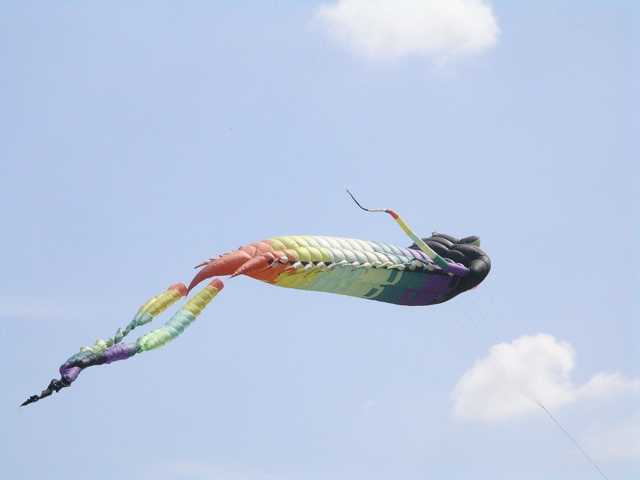
...et le Méga-Trilobyte multicolore...

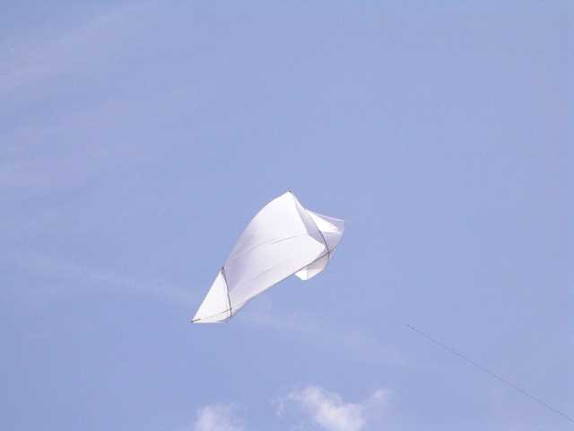
Jean-Claude a créé un pseudo-Rokkaku blanc, pour faire de la photo par vent faible. Pseudo parce que la vergue arrière est plus courte que celle de l'avant ! Le CV est chatouilleux et se tortille par vent plus soutenu : normal, il est juste bridé 2 points !

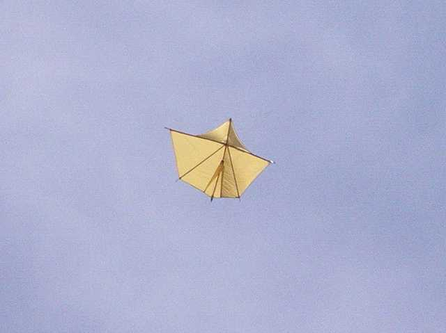
Gilles Poutoux avait fait un Jessica 14 techniquement impeccable ! Résultat, il volait impeccablement, bien sûr. Il a été emballé par la facilité de la chose, même pour un novice !

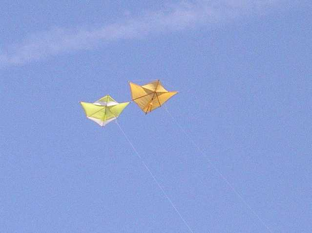
Pour montrer la stabilité, Sylvien et lui ont volé de conserve à 100 m de haut une bonne part de l'après-midi !

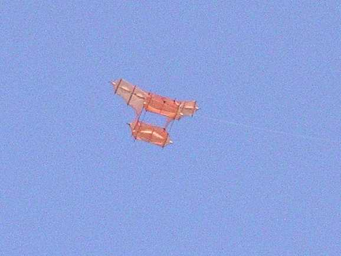
Ce Saconney a montré une grande stabilité.

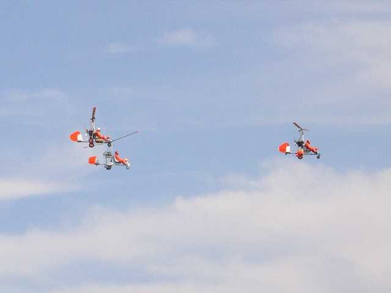
Les autogires ont même fait la démonstration d'une patrouille "de France", c'est la seule ! Pas très violente quand même, la démo...

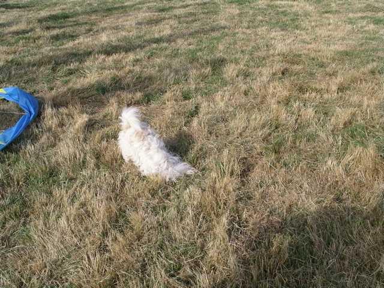
Vicky, elle, ne s'intéresse pas à ce qui vole, mais à ce qui est sous terre et creuse pour chasser les mulots !

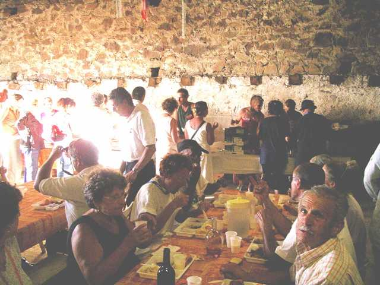
Le soir, repas dans la grange, servi par la main des Grâces.

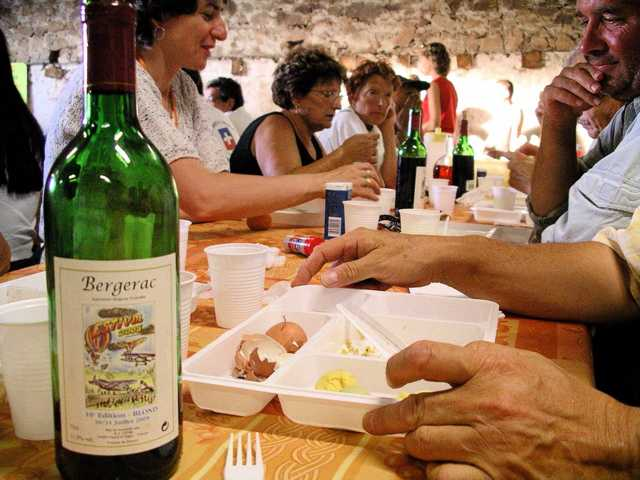
L'apéritif est offert, le vin à volonté, il est même millésimé et dédié à Estivol

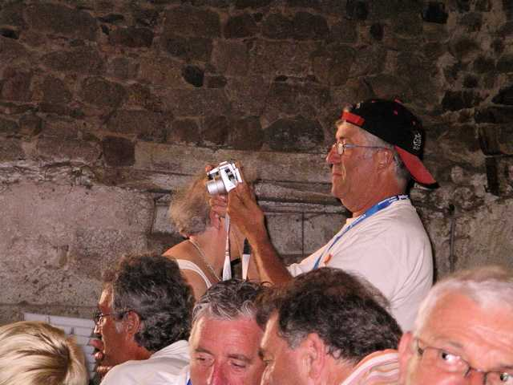
JP n'en perd pas une miette avec son superbe appareil !

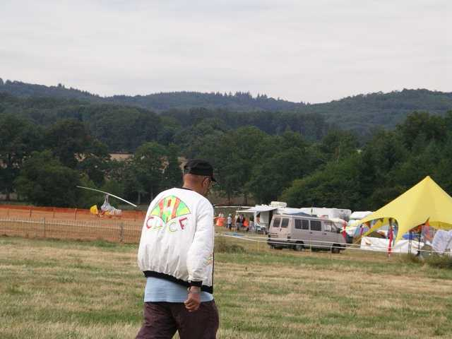
Fernando a sorti son blouson décoré CVCF pour atténuer la fraîcheur du soir.

Et le soleil se couche sur les Monts de Blond... mais il y aura un vol de nuit, avec projecteurs, cette année, le luxe s'installe !

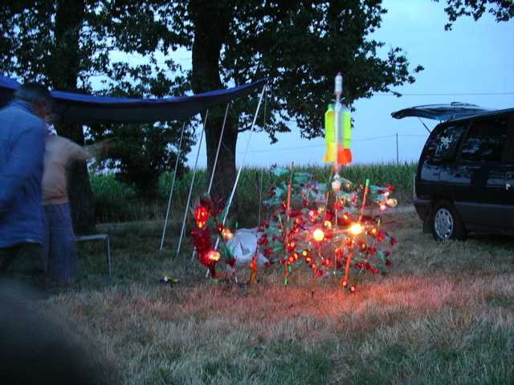
Et Fernando aussi améliore sans cesse ses cactus, maintenant adaptés au vol de nuit !

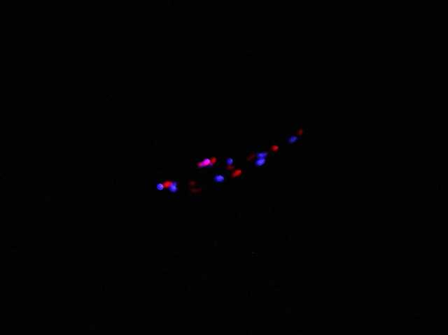
Joël a luminisé son avion avec des diodes toutes simples et colorées ! Les cerfs-volants ont bien volé dans une brise légère mais régulière. Ils n'ont pas été trop éclairés, malgré la "poursuite" qui a surtout suivi les pilotables.

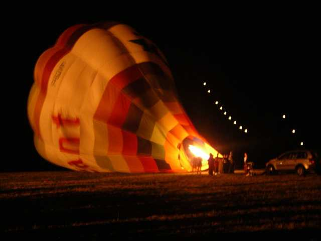
Il aurait fallu, en plus, un peu d'éclairage général même pas très puissant, mais dirigé vers le haut. En fin de vol, les montgolfières commencent à se gonfler, pendant qu'une double guirlande de lampions continue à s'élever !

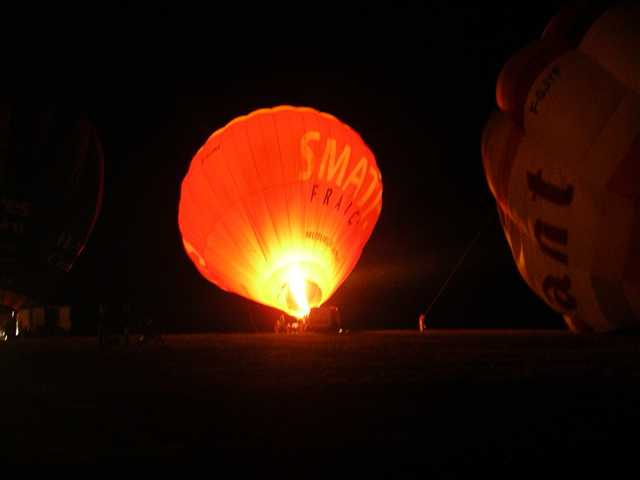
Ca y est, les montgolfières sont dressées et crachent des flammes en un concerto technique et bien coordonné !

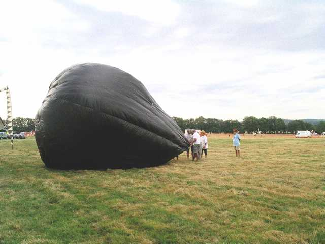
Dimanche matin tôt, pas trop de vent, on essaye les ballons solaires. Jean-Claude gonfle le sien mais ça ne veut pas monter.

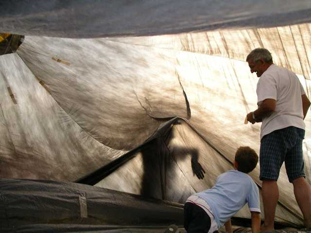
Jean-Marc détecte une fuite de plusieurs cm, et avec le vent, ça renouvelle l'air à l'intérieur et il ne chauffe pas assez. Alors JC entre à l'intérieur, le scotch à la main pour mettre une rustine...

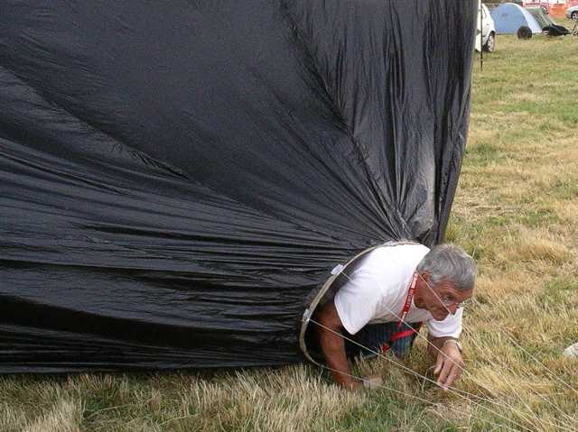
Ca y est, la bête sort de sa coquille, celle-ci est réparée...

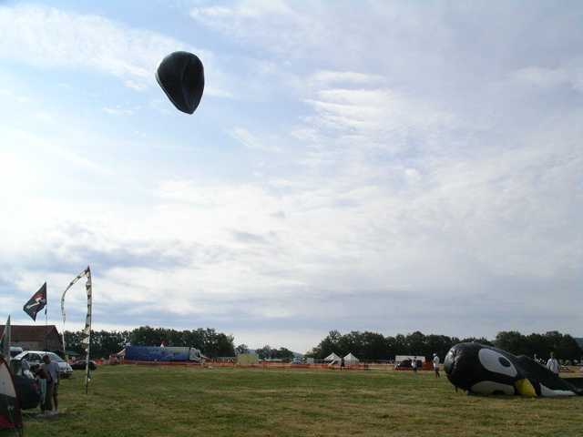
Hé bien voilà, ça marche ! Décollage jusqu'à 20 m, mais le vent monte un peu et il faudra redescendre...

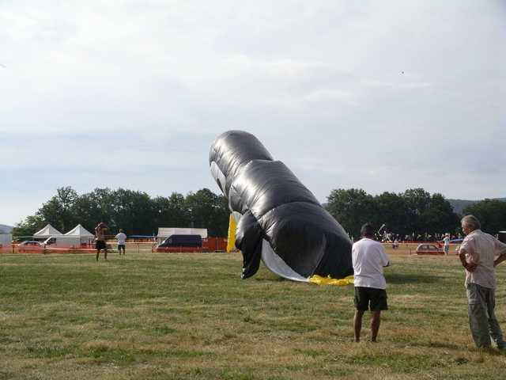
Joël, entraîné par l'exemple, sort son pingouin. Il se gonfle bien, mais ne décollera pas, trop de vent, et évidemment, le rendement est moindre que la sphère de JC !

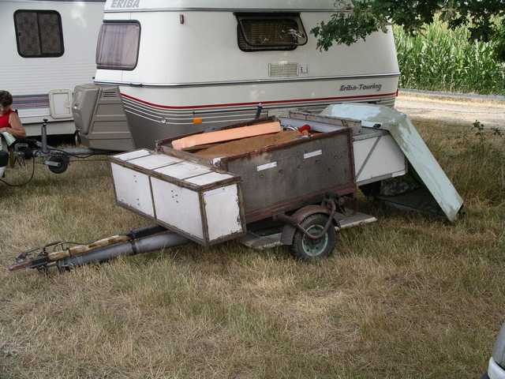
Bon, il va falloir sortir du matos ! Jean-Marc en a plein sa remorque spéciale, rallongée devant, rallongée derrière, avec un tube dessous (fermant à clé !) pour les barres jusqu'à 2 m... Elle doit bien peser une tonne !

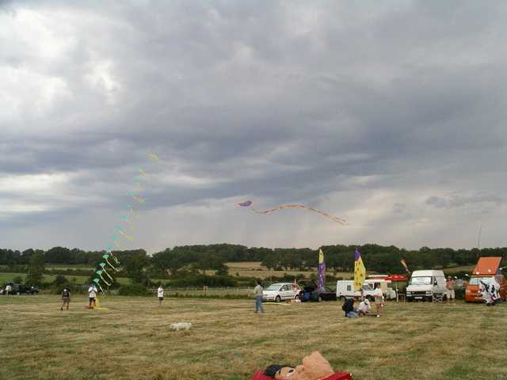
Hé bien si le vent monte, on va commencer à monter, par exemple un train de Eddies à queue...

Côté piste, les ULMs commencent à se poser pour le spectacle aéronautique, au sol ou en vol !

Ils s'alignent sagement, sous les ordres du directeur de terrain qui gère souverainement la chose !

Il y a aussi des maquettes, en particulier d'avions télécommandés. Ici, les avions à pulsoréacteur, qui atteignent des vitesses démentielles mais effectuent en patrouille des manoeuvres impressionnantes !

Le planeur est évidemment plus silencieux, mais il faut le monter là-haut !

Pendant ce temps, la fête continue d'attirer du monde et les parkings se remplissent...

Michel-Marie a sorti son train de 4 démons, identiques mais différents, splendide !

Et l'avion de Joël se sent libre, débarrassé de ses diodes lumineuses !

Les Vierzonnais ont pu sortir leur grand flow-form, toujours impressionnant !

Les Jessica Brothers ont remis ça avec des J12 verts et bleus...

Et nous sommes surveillés par une nana très glamour... A noter une astuce : la petite grille devant la vergue arrière, qui diminue sans doute la traînée, bien qu'elle soit de taille limitée pour cela.

Le bestiaire continue à augmenter, par exemple avec cet âne à queues multiples !

...et cet éléphant conçu et réalisé par les Awita à la différence de leurs cerfs-volants Lynnesques !

...ou encore cette hirondelle beaucoup vue mais toujours agréable...

Et une spécialité de Blond : tractage d'un delta par un ULM ! Ici, le delta, un 3 axes avec une queue et des gouvernes, est sur son chariot de lancement qu'il abandonnera au décollage...

L'ULM tracteur : le câble est accroché... au milieu de l'hélice, percée, comme le démultiplicateur, d'un conduit dans lequel on introduit la tige du câble qui s'accroche derrière et qu'on peut ainsi larguer en vol !

Le décollage est facile, la puissance de l'ULM généreuse et il peut monter accrocher son delta sous les thermiques !

Comme en vol de nuit, les Ailes du Désir et les Alien formeront un team acrobatique qui se débrouille plutôt bien compte tenu de l'improvisation de la chose !

Nous aurons aussi un show de paramoteurs, type sac-à-dos ou avec fuselage...

La journée s'achève, d'ailleurs le vent est tombé... On s'achemine vers la grange pour finir les "restes"... Pas de panique, il y en a pour 100 personnes facilement ! Certains, épuisés par la journée au grand air, s'abandonnent à un petit dodo réparateur...

Du coup, beaucoup de monde est resté pour rendre service et résorber les excédents !

Gérard et Catherine devront monter sur les tables et seront ovationnés pour les remercier de ces journées passionnantes et bien organisées...

Pour finir la soirée, plus de vent pour voler ! Alors Joël sort des montgolfières en papier... Mais il fait chaud et le décollage est difficile. Alors la première, après diverses secousses, finit par brûler sans aller plus loin !

La deuxième se gonfle mais ne veut pas partir. Elle est tenue en forme par d'innombrables mains secourables pour ne pas connaître le sort de la première !

Finalement, elle part après avoir consommé une partie de son carburant, mais très à l'horizontale ! Et elle finira sa carrière dans un chêne un peu plus loin, mais sans y mettre le feu, rassurez-vous !
Voilà, si vous ne connaissez pas Blond, je vous conseille d'essayer, l'ambiance y est exceptionnelle, les terrains et la région propices et les spectacles variés ! Toute l'équipe se démène du soir au matin pour assurer que tout ira bien, et... tout va bien. Merci à tous !